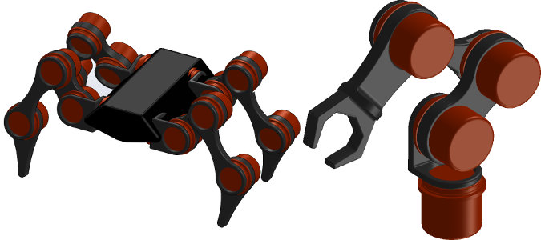
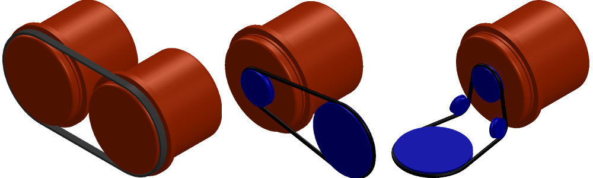

The Mussel Motor is a new self-contained, high-performance series elastic actuator designed from scratch as a pure torque source for next generation soft and dynamic robots. Strong yet lightweight, the Mussel helps you quickly bring your project from concept to complete.
Like its humble shellfish namesake, the Mussel packs impressive functionality into a tiny space. The Mussel’s world-class performance can save you months of engineering effort and help you avoid the time consuming details of adding compliance and torque sensors to existing actuators.
The Mussel’s interface is simple: simply apply power (12-48V) and connect the Mussel to your PC, smart phone, or existing robot controller — no hard real-time OS is required.
Every joint of every dynamic robot has a different optimal physical compliance. Unlike other motors with integrated compliance, the Mussel’s elastic element is easily replaced to help you quickly find the stiffness that works best for your robot as its design evolves.
The Mussel’s top speed of 840deg/sec enables natural jumping, swinging, and throwing motions unattainable with conventional actuators.
Designed with the researcher’s needs in mind, the Mussel is perfect for limbed robots, human-robot interfaces, experiments in tactile programming by demonstration, and exoskeletons. Thanks to its built-in 4-point contact bearing and mounting flange, the Mussel can serve as a standalone joint. Building a new robot is now as simple as 3D-printing a plastic frame to hold Mussels in the desired configuration.

Pair the Mussels with our accessories for even more design flexibility: a timing belt lets two Mussels work in parallel to double the joint power. External pulleys provide a low-friction, backlash-free way to adjust the final torque/velocity ratio, change the rotation axis, or simply to move the Mussel away from a particularly crowded space in your robot.

Is the Mussel almost, but not quite, what you need? Well, since many of our parts are made from scratch in the Octopus Robotics machine shop, our friendly robotics geeks are happy to accommodate customizations and coloration that you may require.
Three sizes of Mussel are available: small (MM50), medium (MM75), and large (MM100). The MM75 will be shipped soonest, followed by the MM100 and MM50.
| Model: | MM50 | MM75 | MM100 | |
|---|---|---|---|---|
| Diameter | 50 | 75 | 100 | [mm] |
| Length | 55 | 72 | 95 | [mm] |
| Mass | 290 | 770 | 1800 | [g] |
| Stall torque (continuous) | 4 | 9.8 | 18 | [Nm] |
| Peak torque (momentary) | 8 | 31 | 60 | [Nm] |
| Max RPM | 140 | 140 | 140 | [RPM] |
| Power | 60 | 140 | 270 | [W] |
| Voltage | 12-48 | 12-48 | 12-48 | [VDC] |
| Stall current | 1.3 | 2.9 | 5.6 | [A] |
| Peak current | 3.9 | 9.5 | 17 | [A] |
| Torque Resolution | 0.2 | 0.3 | 0.5 | [Nm] |
| Angular Resolution | 0.25 | 0.25 | 0.25 | [deg] |
| Communication | RS485 + (USB 1.0, CAN bus, Ethernet, Ethercat, or RS232…choose 1) | |||
| Daisy-chainable | Yes | |||
| Rotation | Continuous | |||
Pre-order now to ensure that you’ll get your Mussels as soon as possible and that you won’t be left waiting in the periods between manufacturing runs.